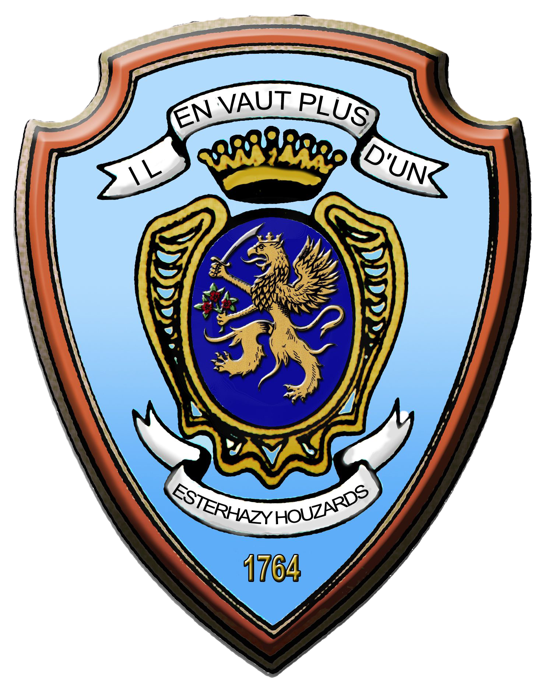

Je m'appelle Aloïs Neron de Azevedo. J'ai 17 ans, j'habite à Sélestat et je suis en 1ère année d'IUT à Colmar.
J'aime beaucoup les films/Séries en VO ainsi que les jeux vidéo.
Je m'intéresse également à la géopolitique, les conflits dans le monde et comprendre les rapports de force entre les puissances et de pouvoir suivre ça en temps réel.
Après la seconde je me suis orienté vers un BAC STI2D avec comme spécialité de première SIN. Cette spécialité m'a permis de voir certains aspects du numérique qui m'a intéressé. Je me suis donc orienté vers un IUT, celui de Colmar faisait partie de mes choix.
Aujourd'hui mon projet personnel n'est pas encore finalisé. Pour le moment mon projet est d'obtenir un diplôme et de m'engager dans l'armée. Actuellement en train de préparer mon dossier de réserve dans l'armée de terre.
J'ai eu l'occasion de pouvoir faire des stages à l'armée. Le premier en 3ème et le second en 1ère dans le régiment des Hussards. En stage une semaine à découvrir leurs méthodes d'apprentissage, leur travail avec les spécificités de chacun.
My name is Aloïs Neron de Azevedo, I am 17 years old. I live in Sélestat sins 2 years. I really like movies and series and video games. I'm interesting about geopolitical conflicts in the world. I did a technological highschool, I took SIN in spécificities than I discovered many aspects of computer science. I found this way very interesting, so I apply to the Institut of technology in Colmar. Today my personal project is not defined, but I will probably join the Army. I already made a discovery of this way and today I began my entry into the Army reserve.